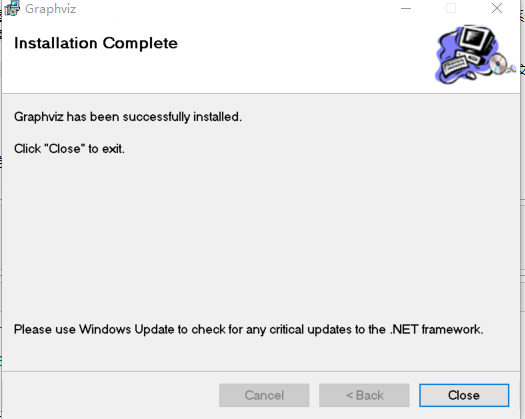

本文代码运行环境:
- windows10
- python3.6
- jupyter notebook
下载Graphviz
pydotplus依赖Graphviz这个绘图库, 它是c开发的, 所以在安装pydotplus之前, 需要首先安装Graphviz, 不过不管哪个系统, 它都有编译好的二进制包, 可以直接安装。以windows为例, 我们首先需要现在Graphviz安装包: 点此下载.
然后找到Stable 2.38 Windows install packages, 这是稳定版的, 点击进入以后, 下载graphviz-2.38.msi即可。文件大概由34M。
安装Graphviz
安装过程很简单, 只要双击安装包, 一路下一步就行了。
配置环境变量
pydotplus实际上是在命令行调用Graphviz, 所以要想python能找到graphviz的安装路径, 必须配置环境变量。
通常, graphviz默认安装在这个路径: C:\Program Files (x86)\Graphviz2.38
我们需要将两个路径添加到环境变量中:
C:\Program Files (x86)\Graphviz2.38C:\Program Files (x86)\Graphviz2.38\bin
安装pydotplus
pydotplus是python模块, 它的安装和安装普通的模块一样, 就是使用pip:
1 | pip install pydotplus |
因为本篇教程写在jupyter notebook 中, 可以在cell中安装pydotplus, 所以可以直接使用:
%pip install pydotplus
1 | Looking in indexes: https://mirrors.ustc.edu.cn/pypi/web/simple |
引入模块
1 | import pydotplus as pdp |
因为我们的代码运行环境是jupyter notebook, 所以我们可以设置让图片实时展示在notebook中:
1 | %matplotlib inline |
绘制第一幅图
1 | from IPython.display import display, Image |

dot语法入门
基本用法
- 使用双斜杠注释
1 | // 这里是注释 |
- 指定有向图和无向图
1 | // 有向图 |
1 | // 无向图 |
节点之间的关系使用
--或者->表示节点间关系定义属性使用
node[attribute1=value1, attribute2=value2]
1 | //定义a节点为长方形, 节点显示的文本为"Hello world"样式为填充, 填充颜色为#ABACBA |
- 定义节点形状使用
node[shape=形状名称]
使用上面提到的功能, 绘制下面的图:
1 | dot = ''' |

可用形状
下面是可以在shape属性中使用的:


可用颜色
下面是可以在属性color中使用的:
箭头类型
通常可以这样指定箭头形状: [arrowhead=dot]
| "box" | 
| "crow" | 
| "curve" | 
| "diamond" | 
|
| "dot" | 
| "icurve" | 
| "inv" | 
| "none" | 
|
| "normal" | 
| "tee" | 
| "vee" | 
|
下面是一个案例:
1 | dot = ''' |

终极案例-绘制决策树
使用pydotplus可以很方便的绘制决策树的决策图, 下面直接上代码就可以了:
1 | #用于数据处理和分析的工具包 |

注意
本文由jupyter notebook转换而来, 您可以在这里下载notebook
统计咨询请加QQ 2726725926, 微信 mllncn, SPSS统计咨询是收费的
微博上@mlln-cn可以向我免费题问
请记住我的网址: mlln.cn 或者 jupyter.cn